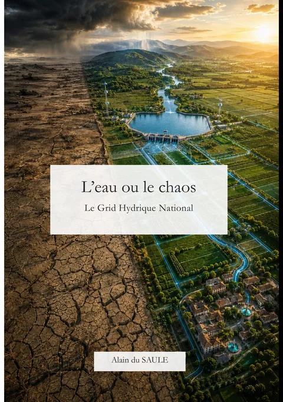

Un réseau national de l’eau ?
Pourquoi l’analogie avec le réseau électrique change l’échelle du débat.
Espace média
Éléments de présentation, visuels et contact pour préparer un article, une chronique, une interview ou un échange public autour de L’eau ou le chaos.

Fiche pratique
Le Grid Hydrique National
Angles éditoriaux
Le sujet se prête à des formats nationaux comme régionaux, techniques comme citoyens.
Pourquoi l’analogie avec le réseau électrique change l’échelle du débat.
Dépasser l’opposition entre restrictions et grands ouvrages pour parler de cycles, de territoires et de gouvernance.
Ce que la crise hydrique implique déjà pour les élus, les services publics et les habitants.
Comment penser les usages agricoles sans réduire le débat à la pénurie et au conflit.
Pourquoi un professionnel de l’informatique et entrepreneur s’empare d’un sujet d’infrastructure nationale.
Ressources
Les documents peuvent être utilisés pour présenter le livre, avec mention du titre, de l’auteur et de l’éditeur.
PDF · 3 Mo
Présentation du livre, informations pratiques, résumé et contact.
Télécharger le PDFJPG · haute définition Web
Visuel de la première de couverture destiné aux publications numériques.
Télécharger la couvertureLien éditeur
Résumé officiel, caractéristiques et accès aux éditions papier et numérique.
Ouvrir la fiche BoDContact direct
Interview, podcast, conférence, rencontre locale ou échange avec des acteurs du territoire.